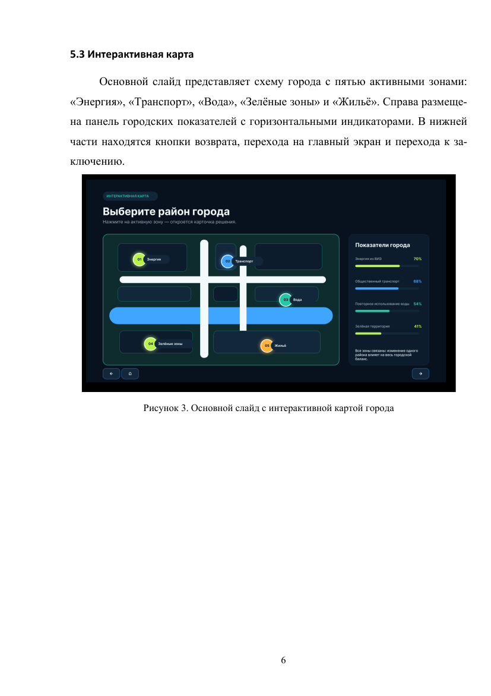
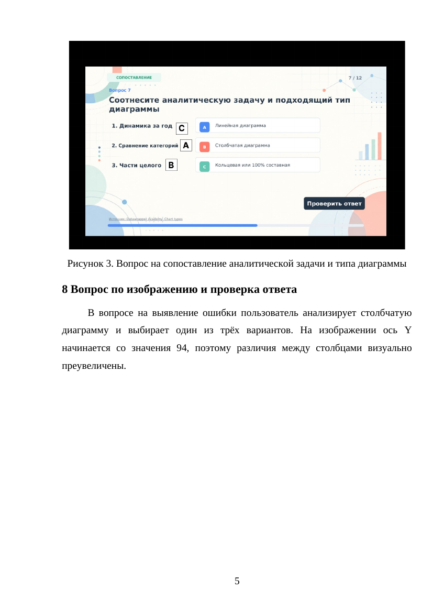
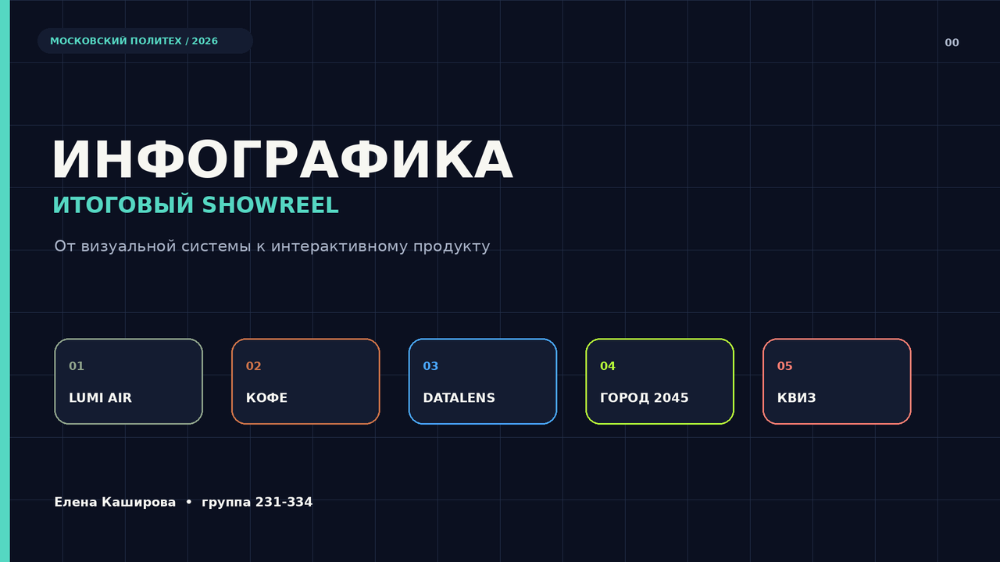

Город 2045
Интерактивная инфографика о городе будущего. Сначала — wireframes и структура сценария, затем карта районов, показатели, overlay-состояния и финальная визуальная система.

Wireframe → UIInteractive mapOverlaysPrototype
UI/UX · DIGITAL DESIGN · 2026
Проектирую web и mobile интерфейсы, интерактивные продукты и визуальные системы. Люблю соединять чистую структуру, характерную графику и понимание того, как дизайн будет работать в реальном продукте.
SELECTED WORK
От wireframe и пользовательского сценария до финального UI, адаптива и интерактивного прототипа.
Интерактивная инфографика о городе будущего. Сначала — wireframes и структура сценария, затем карта районов, показатели, overlay-состояния и финальная визуальная система.

Учебный продукт с 12 вопросами: стартовый экран, выбор ответа, проверка, объяснение, прогресс и итоговый результат. Основной фокус — состояния интерфейса и понятная обратная связь.

Интернет-магазин одежды: главная, каталог и карточка товара. Минималистичная сетка, крупная fashion-фотография, фильтрация и последовательный путь к покупке.
Серия из 12 рекламных карточек для линейки техники. Единая палитра, модульная композиция, повторяемые компоненты и визуальная иерархия характеристик.
Мобильный магазин художественных материалов: каталог, карточка товара, корзина, контактные данные, доставка и способ оплаты.
Концепт сайта издательства: desktop и mobile версии главной страницы плюс UI-kit с палитрой, типографикой и компонентами.

MOTION & VISUAL
Работаю не только со статичными интерфейсами: Adobe Animate, After Effects, Premiere Pro, MadMapper, p5.js, Unity/Vuforia и генеративные эксперименты помогают мне шире смотреть на digital-дизайн.
ABOUT ME
Я Елена Каширова, UI/UX & Digital Designer из Москвы. Сейчас учусь на 4 курсе Московского Политеха и развиваюсь в проектировании web и mobile продуктов.
Мне интересно не просто сделать красивый экран, а собрать понятную систему: продумать структуру, пользовательский путь, состояния, адаптив и визуальный язык. Технический бэкграунд помогает говорить с разработкой на одном языке и учитывать ограничения продукта ещё на этапе макета.
Работаю в Figma, Photoshop, Illustrator, InDesign, After Effects, Premiere Pro и Adobe Animate. Знакома с HTML, CSS, JavaScript, C++, C#, Java, PHP и Unity. Проходила международную программу Innovation Entrepreneurship в Asian Institute of Technology.
Сейчас рассматриваю Junior UI/UX / Digital Designer позиции и стажировки.